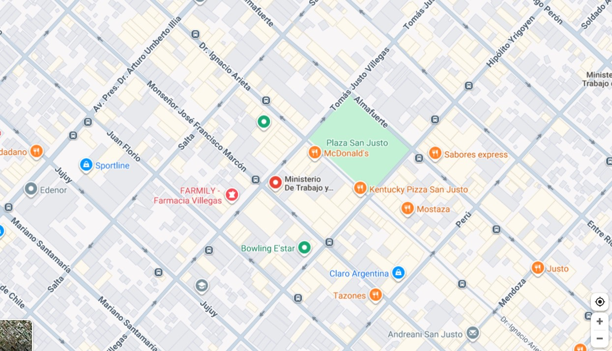

Ministerio de trabajo:
El Ministerio de Trabajo es el organismo gubernamental encargado de diseñar, implementar y fiscalizar las políticas públicas relacionadas con el empleo, las relaciones laborales y la seguridad social. Su objetivo principal es promover el trabajo decente, proteger los derechos de los trabajadores y regular las negociaciones colectivas entre empleadores y empleados.
Tareas realizadas:
- Recepcionar las actas de los inspectores.
- Ingresar las actas de inspección a la base de datos, verificar y derivar al sector administración.
- Armar el planillado y todos los recursos necesarios para la correcta labor del inspector.
- - Recepcionar denuncias por trabajo no registrado y asignarlas en el sistema GOI (gestión de orden de inspección)
- Archivar la documentación culminado el proceso administrativo.
Fecha de inicio:
Julio 2023
Fecha de fin:
Diciembre 2023
Ubicación:

Volver